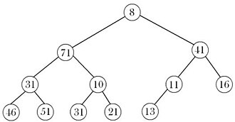

Heap Min–Max
Considere um vetor L de tamanho N, contendo N números inteiros. Os elementos de L são indexados de 0 a N − 1. Como exemplo, suponha que N = 12 e que o vetor L contenha os seguintes valores:
Esse vetor pode ser mapeado para uma árvore binária completa, conforme ilustrado na figura a seguir:

Um vetor L satisfaz a propriedade de um heap Min–Max se, e somente se, as seguintes condições forem atendidas:
Para todo índice i válido do vetor:
Se i está em um nível par (nível min), então o elemento L[i] é menor ou igual a todos os seus filhos e netos, isto é,
e, sempre que existirem,
Se i está em um nível ímpar (nível max), então o elemento L[i] é maior ou igual a todos os seus filhos e netos, isto é,
e, sempre que existirem,
O nível de um nó pode ser determinado diretamente a partir do seu índice no vetor. Em particular, para um nó de índice i, seu nível é dado por
ou, de forma equivalente, pelo número de bits necessários para representar o valor (i + 1), menos um.
Tarefa:
Dado um vetor L, determine se ele representa um heap Min–Max. Caso represente, armazene o valor 1 na variável resp; caso contrário, armazene o valor 0.
No exemplo apresentado, o vetor satisfaz as propriedades de um heap Min–Max e, portanto, temos:
resp = 1